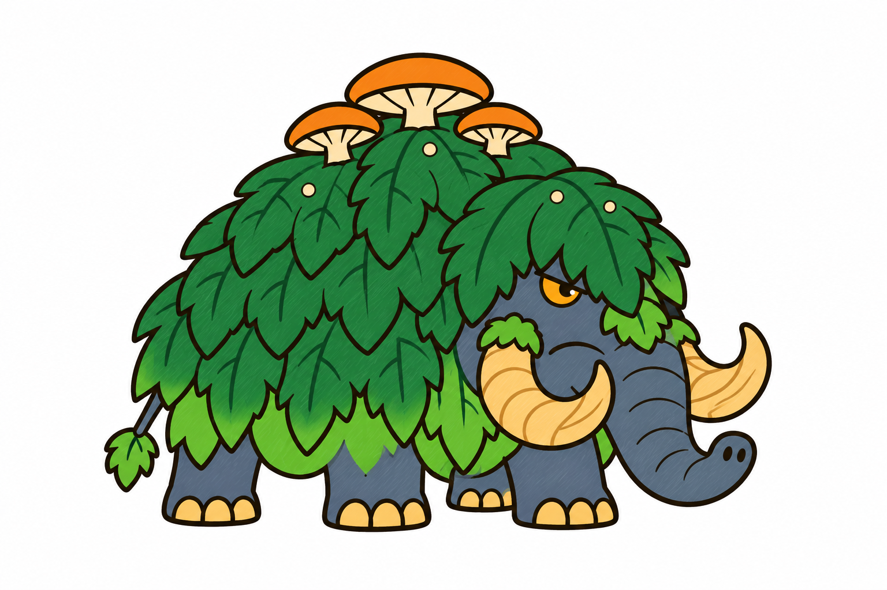
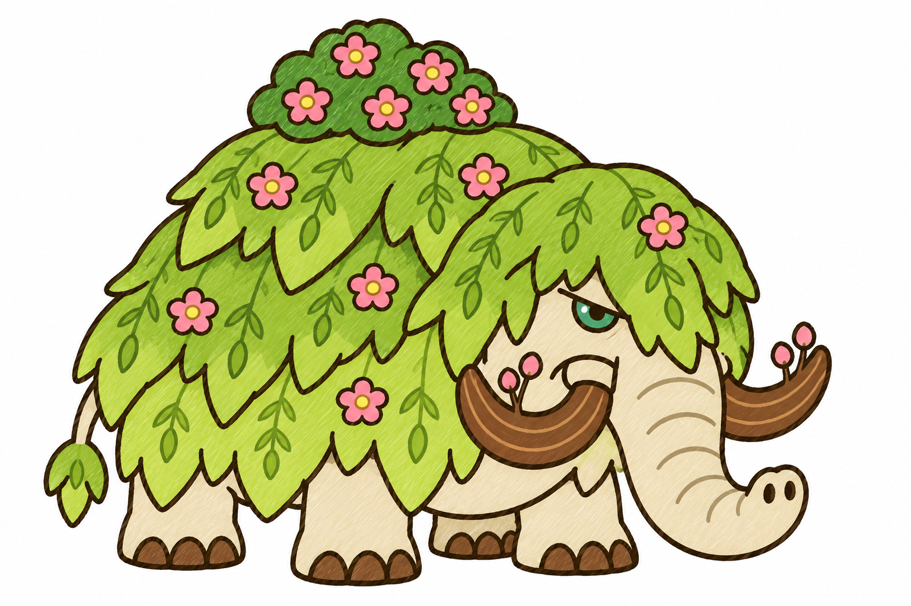
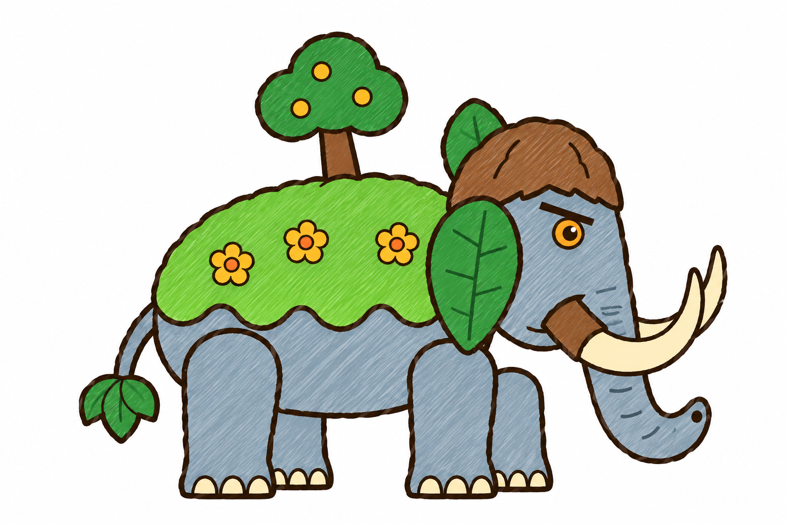

Ma mút rừng (tướng thứ 5 đảo Mộc) · concept bản 2 · hai hướng, chờ bạn chọn
A · duong_xi: áo dương xỉ lục sẫm, da đá lam, ngà rễ gỗ màu mật, nấm cam, mắt hổ phách

B · lieu_hoa: áo liễu rủ lục vàng điểm hoa hồng, da kem, ngà cành gỗ sẫm có nụ, bụi hoa, mắt lục lam

Bản đầu đã bị trả:
